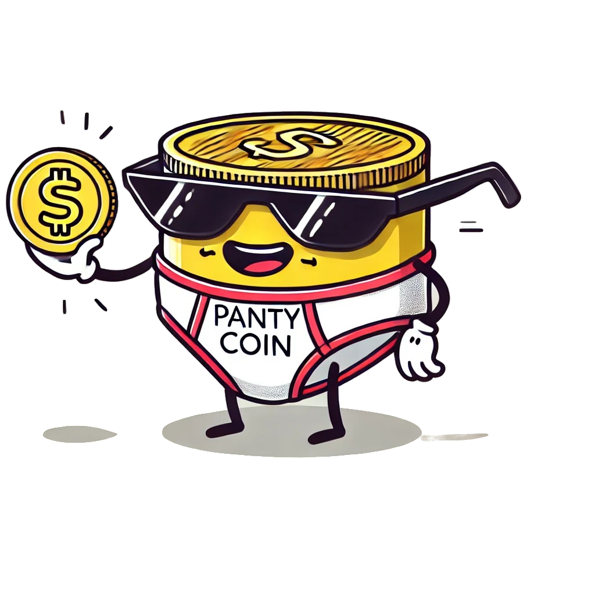

Decentralizing Delicates
Welcome to AI Panty, the cutting-edge revolution where artificial intelligence, blockchain, and bold innovation reshape the intimate apparel marketplace.
At its core, AI Panty isn’t just a cryptocurrency or a platform—it’s a visionary ecosystem that leverages AI to bring personalization, privacy, and efficiency to the forefront of the intimate trade industry. From dynamic pricing algorithms to unmatched sustainability, AI Panty leads the charge in turning a niche market into a global phenomenon.
The PantyCoin project is more than just a currency—it’s a cultural movement. Inspired by the evolution of memecoins, it introduces inclusivity, humor, and practicality into a market that has been underserved by traditional financial tools.
By combining blockchain technology with a niche demand, PantyCoin offers an innovative solution to support a flourishing ecosystem of trade, fun, and financial opportunities. Truly, this is a coin that makes waves, creating a legacy Satoshi Nakamoto would smile upon.
AI Panty is here to transform the way we interact with intimate apparel—making it smarter, more sustainable, and accessible to everyone. Our mission is to build an inclusive, data-driven marketplace where technology enhances trust, sustainability thrives, and innovation leads to meaningful connections.
Whether you're trading delicate treasures, investing in the future of AI-driven platforms, or just here for the revolution, AI Panty welcomes you to the frontier of the intimate economy.
Let’s innovate, inspire, and make history—together.

A dapper gentleman who loves decentralization and tasteful lingerie. Mr. Panty represents sophistication and style in the crypto world.
A savvy entrepreneur bringing elegance and style to the marketplace. She’s the queen of decentralization and innovation.
A bold, unisex character inspired by SpongeBob, celebrating inclusivity and fabulousness. Mx. Panty is for everyone and anyone!
From groundbreaking AI integrations to eco-friendly innovations, here’s how AI Panty plans to revolutionize the world of crypto, lingerie, and sustainability:
"The journey to decentralized fabulousness begins here. Stay tuned as we lace up for global adoption!"
Want to dive deeper into the vision and technical details of PantyCoin? Our white paper has all the juicy details, from market insights to tokenomics and privacy innovations.